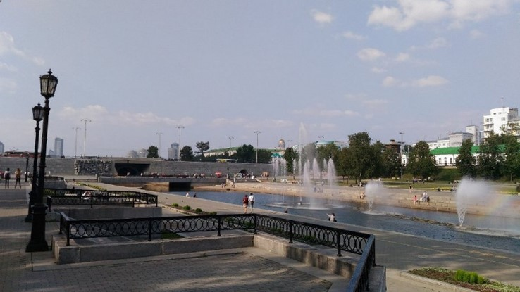

Плотина Городского пруда
на реке Исеть
Плотина Городского пруда на реке Исеть — плотина, расположенная на реке Исеть в Историческом сквере Екатеринбурга. Построена в 1723 году, впоследствии многократно перестраивалась. Жители города называют её «Плотинка». Традиционное место массовых народных гуляний и праздников. История:
Строительство плотины было начато в 1721 году по решению В. Н. Татищева, затем приостановлено из-за отсутствия одобрения Берг-коллегии и возобновлено в марте 1723 года после прибытия на Урал Вильгельма де Геннина. Строительство завершилось 11 сентября 1723 года. Плотина дала механическую энергию для приведения в действие механизмов вновь основанного Екатеринбургского завода и послужила началом строительства города. В основе своей она построена из стволов лиственницы и гранита. В результате сооружения плотины на реке Исеть образовался пруд, называющийся сейчас Городским прудом Екатеринбурга
Плотина имела длину в 209 метров, ширину в 42 метра и высоту в 6,5 метра. Она была возведена из бревенчатого сруба, набитого камнем и отборной глиной. Плотину спроектировал плотинной мастер Невьянского завода Л. С. Злобин. 5 ноября 1987 года на месте памятника Екатерине I был установлен бюст Д. Н. Мамина-Сибиряка (скульптор А. Антонов, архитектор Б. Демидов). В 1998 году из бокового прореза был сделан проход из нижней террасы Исторического сквера на верхнюю площадку, плотина была также укреплена железобетонными перекрытиями. Во время прокладки пешеходного тоннеля под плотиной к 275-летию со дня основания города в 1998 году обнаружено отличное состояние её конструкции, несмотря на интенсивное транспортное движение по ней. 